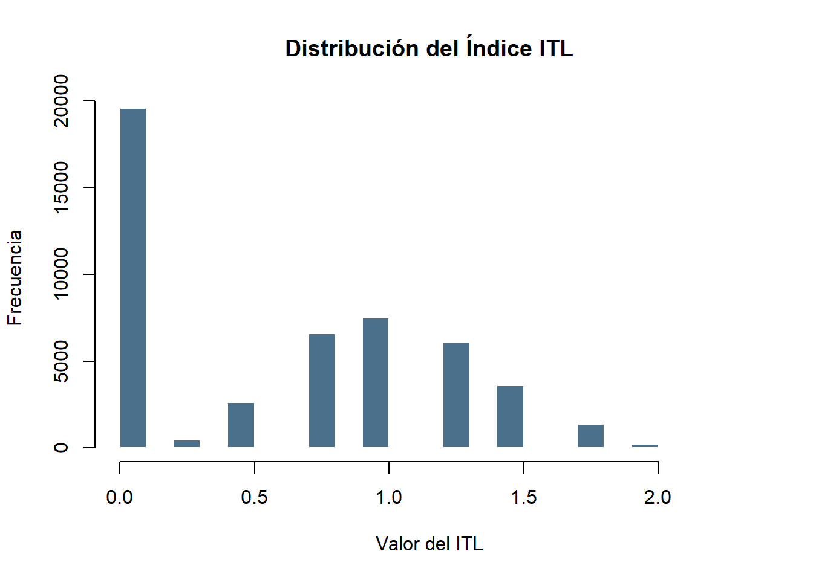
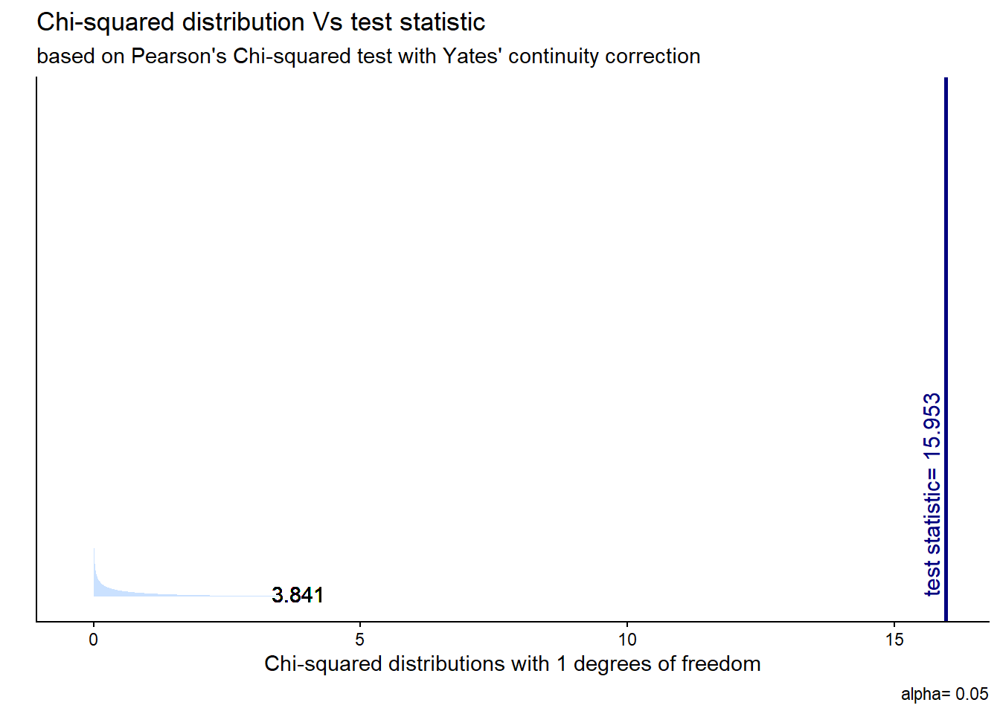
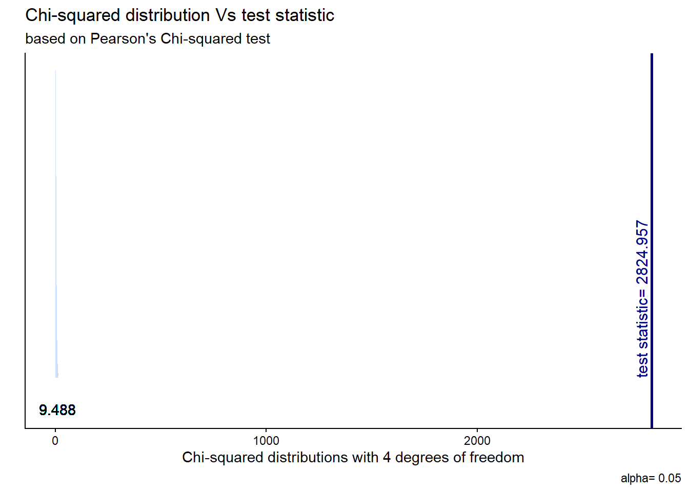

| Estadísticas descriptivas de dimensiones del índice de tiempo libre | |||||
| Variables de uso del tiempo en base a ENUT, 2023 | |||||
| Variable | N | Media | Desv. Est. | Mín. | Máx. |
|---|---|---|---|---|---|
| Tiempo dedicado al trabajo (trabajo) | 48020 | 0.416 | 0.739 | 0.000 | 2.000 |
| Tiempo dedicado a la educación (estudio) | 48020 | 0.121 | 0.437 | 0.000 | 2.000 |
| Tiempo dedicado a Responsabilidades personales (resp_personal) | 48020 | 0.554 | 0.723 | 0.000 | 3.000 |
| Tiempo dedicado al ocio (ocio) | 48020 | 1.384 | 1.283 | 0.000 | 3.000 |
| Notas: En base a ENUT, 2023 | |||||
Diferencia en el tiempo libre
Estadística Correlacional 2025
Introducción
El estudio que se realiza del uso del tiempo se ha convertido en un elemento importante para comprender sucesos que ocurren en la sociedad, como la desigualdad económica y de género presente en la vida cotidiana. En Chile, el análisis del tiempo libre constituye una herramienta clave para evaluar el bienestar, la calidad de vida y la distribución de las descargas que se realizan en distintos grupos sociales.
Según la Comisión Económica para América Latina y el Caribe (CEPAL), el tiempo es una dimensión estructural de desigualdad que revela brechas no notorias en los ingresos, pero sí son visibles cuando la persona organiza sus actividades diarias (CEPAL, 2004). Por eso, el estudio del tiempo libre, entendido como el conjunto de actividades no obligatorias que las personas realizan para descansar o desarrollar intereses personales (Gershuny y Fisher, 2014), se vuelve esencial para poder evaluar la calidad y estilo de vida.
La disponibilidad y el uso del tiempo no solo se relaciona con el bienestar, sino también con la inserción laboral, el nivel económico, las responsabilidades de cuidado y las desigualdades de género. Distintas investigaciones han demostrado que las mujeres suelen disponer de menos tiempo libre debido a la ocupación que tienen en la casa como tareas domésticas o de trabajos no remunerados que asumen dentro del hogar (Aguirre, 2005; Miranda, 2011). Esta desigualdad se puede reflejar en patrones estructurales presentes en toda América Latina. En esta línea, Arriagada (2011) plantea que la organización social del cuidado reproduce desigualdades que limitan la autonomía de ciertos grupos, como mujeres o personas de menores ingresos. De manera complementaria, estudios contemporáneos han demostrado que la distribución del tiempo libre está asociado tanto a factores estructurales como a condiciones laborales, trayendo educativas y características del entorno residencial (Mora, 2019).
Desde esta perspectiva, el presente trabajo busca analizar las desigualdades en el uso del tiempo libre en Chile, considerando variables sociodemográficas y laborales que pueden incidir en su distribución del tiempo. Se decidió construir un índice de tiempo libre a partir de variables relacionadas al uso del tiempo en base a ENUT, 2023 de esta manera el tiempo libre se aborda como la variable dependiente del estudio. El objetivo es indagar en si hay correlación entre el sexo, la discapacidad y la edad en el tiempo libre que las personas poseen. El informe se dividirá en la metodología usada, donde se explicará la base con la que se trabajó y las variables usadas para construir el índice para, posteriormente, entrar en la sección del análisis de los resultados, donde se analizarán gráficos y tablas de correlación para terminar concluyendo.
Se espera que la investigación pueda aportar en indicar si las variables sexo, discapacidad y edad están correlacionadas al tiempo libre que puedan poseer las personas. En este contexto, se formularon tres hipótesis:
-H1) Las mujeres no tienen tiempo libre a comparación a hombres.
-H2) Las personas mayores (65 años o más) y los menores (0 a 18 años) tienen tiempo libre, mientras que las personas adultas (19 años a 64 años) no lo tienen.
-H3) Las personas discapacitadas tienen tiempo libre, mientras que las personas que no poseen discapacidad no tienen tiempo libre.
Metodología
Datos
La metodología que conforma todo este informe se basa en los datos de la ENUT 2023, la cual es la Encuesta Nacional sobre el Uso del Tiempo. Este es un estudio estadístico que se encarga de registrar el cómo las personas emplean las horas del día en ciertas actividades, como lo son el trabajo remunerado, el trabajo no remunerado y el tiempo personal, entre otras situaciones. Esta encuesta es realizada por el Instituto Nacional de Estadística (INE), de modo que logra una visibilidad sobre las diversas formas de trabajo diario que las personas desempeñan, aún si dicho trabajo no es remunerado, y, a su vez, comprender cómo se distribuye el tiempo en la sociedad (INE, 2023). Teniendo en cuenta la ENUT como base de datos es que se determina que el tema central para el presente informe es “La diferencia en de tiempo libre de las personas”.
En base a este tema central es que se desglosó la variable dependiente, la cual sería “El tiempo libre”, debido a que así se se espera medir o identificar si existe algún cambio en si las personas tienen o no tiempo libre según las variables independientes que fueron escogidas. Las tres variables independientes escogidas fueron las siguientes: “Sexo”, “Edad” y “Discapacidad”. Esto debido a que son las que se espera que influyan en los resultados que se obtendrán en la variable dependiente, debido a que estas variables, las independientes, tienen a marcar una diferencia en múltiples fenónemos, por lo que se busca comprobar si las personas tienen tiempo libre o no se correlaciona a su sexo, edad o si tiene discapacidad.
Para poder medir si las personas tienen tiempo libre o no se creó un índice a partir de ciertas variables de la encuesta ENUT 2023, el cual será ocupado para realizar correlaciones y crear gráficos comparativos que sustenten o anulen las 3 hipótesis planteadas con anterioridad.
Variables
Para medición de si las personas tienen tiempo libre o no se creó un índice de tiempo libre, que se midió en cuatro dimensiones divididad de la siguiente forma:
- Dimensión 1: Tiempo de trabajo (trabajo). Variable nominal Esta dimensión presenta sus resultados de forma dicotómica, de modo que se operacionaliza tal que: “Si los individuos poseen tiempo libre o no, según su tiempo de traslado más sus actividades laborales”.
Esta dimensión contempla las variables:
-“tiempo de traslado” (t_tto_dt). De razón: Tiempo en día tipo en traslados por trabajo en la ocupación.
-“tiempo que trabaja” (t_to_dt). De razón: Tiempo en día tipo en actividades de trabajo en la ocupación
- Dimensión 2: Tiempo de estudio (estudio). Variable nominal Esta dimensión presenta sus resultados de forma dicotómica, de modo que se operacionaliza tal que: “Si los individuos poseen tiempo libre o no, según su tiempo de traslado más sus actividades educativas”.
Esta dimensión contempla las variables:
-“tiempo de traslado” (t_ted_dt). De razón: Tiempo de traslados en educación en día tipo.
-“tiempo en actividades de educación” (t_ed_dt). De razón: Tiempo en día tipo en actividades de educación.
- Dimensión 3: Responsabilidades personales (resp_personal) Variable nominal. Esta dimensión presenta sus resultados de forma dicotómica, de modo que se operacionaliza tal que: “Si los individuos poseen tiempo libre o no, según sus actividades de cuidado a otras personas, de trabajo doméstico y de cuidado personal en un día tipo”.
Esta dimensión contempla las variables:
-“tiempo de actividades de cuidado” (t_tcnr_ce_dt). De razón: Tiempo en día tipo en actividades de Cuidados esenciales a integrantes del hogar, tales como mudar o llevar al baño, bañar o asear, vestir o arreglar, dar de comer, ayudar a camina, desplazarse o cambiar de posición, ayudar a comunicarse con otras personas, contar juegos o jugar o la acostó o le hizo dormir.
-“tiempo de trabajo doméstico” (t_tdnr_dt). De razón: Tiempo en día tipo en Trabajo Doméstico No Remunerado para el Propio Hogar. Está a nivel de gran división de CAUTAL.
-“tiempo de cuidado personal” (t_cpaf_cp_dt). De razón: Tiempo en día tipo en actividades de Cuidado personal, tales como bañarse, vestirse o arreglarse o ir a una consulta o centro médico.
- Dimensión 4: Tiempo de ocio (ocio). Variable ordinal. Esta dimensión presenta sus resultados de forma dicotómica, de modo que se operacionaliza tal que: “Si los individuos poseen tiempo libre o no para realizar actividades de uso de Medios de Comunicación Masiva y si poseen tiempo libre o no para realizar actividades de vida social y ocio en un día tipo”.
Esta dimensión contempla las variables:
-“tiempo de uso de MCM” (t_mcm_dt). De razón: Tiempo en día tipo en uso de Medios de Comunicación Masiva en un día tipo.
-“tiempo de uso en vida social y ocio” (t_vsyo_dt). De razón: Tiempo en día tipo en actividades de Vida social y ocio. No contempla actividades deportivas y uso de medios de comunicación masiva.
Se utilizaron ciertas variables para la construcción de gráficos y correlaciones, las cuales son:
Sexo (Sexo). Variable nominal.
Edad (edad). Variable de razón: Edad en años cumplidos.
Edad recodificada (edad_recod). Variable ordinal: Edad separada en tramos etarios.
Discapacidad (pesd). Variable nominal: Identifica si una persona está en situación de discapacidad.
Para cerrar, la variable del índice fue recodificada como “itl_recod” para volverla una variable dicotómica para indicar si se posee tiempo libre o no.
Respecto al trato de los NA, se optó por aplicar listwise a las variables que fueron creadas para las dimensiones, ya que esto permitía calcularlas por medio de una suma ponderada para la creación del índice.
Cálculo de correlación del índice de tiempo libre (itl) mediante Alpha de Cronbach.
| trabajo | estudio | resp_personal | ocio | |
|---|---|---|---|---|
| trabajo | ||||
| estudio | -0.054*** | |||
| resp_personal | 0.351*** | 0.241*** | ||
| ocio | 0.374*** | 0.249*** | 0.546*** | |
| Computed correlation used pearson-method with listwise-deletion. | ||||
[1] 0.6158207Métodos
Los métodos estadísticos para el cálculo de las dimension fue una suma ponderada para estadandarizar sus datos y evitar errores en el cálculo debido a los NA, puesto que por la naturaleza de las variables, no era posible calculas las dimensiones con un promedio ponderado. Tras esto, el cálculo del índice de tiempo libre como tal si fue realizado por medio de un promedio ponderado, ya que se buscaba que las cuatros dimensiones valieran 0.25, de modo que se estandarizaran.
Tras esto, se realiza un Alpha de Cronbach para ver la correlación del índice y sus dimensiones, dando 0.61, por lo que el índice está apto para su uso.
Posteriormente, se realizaron correlaciones entre el índice de tiempo libre (itl) y el sexo, entre itl y la edad y entre itl y discapacidad, utilizando Pearson.
También se realizó una prueba de CHI2 entre el índice de tiempo libre recodificado (itl_recod) y sexo y una tabla de contingencia entre itl_recod y edad_recod.
Análisis
Análisis descriptivo
Resumen de las estadisticas descriptivas clave de la variable índice de tiempo libre
| Estadístico | Valor |
|---|---|
| Media | 0.62 |
| Mediana | 0.75 |
| Desviación estándar | 0.58 |
| Varianza | 0.34 |
| Mínimo | 0.00 |
| Máximo | 2.25 |
| Rango | 2.25 |
| Coef. Variación | 0.94 |
| N válidos | 48020.00 |
La media del ITL es de 0,62 mientras que la mediana alcanza el 0,75, lo que propone que la distribución posee asimetría negativa, pues la mitad de las personas tienen un nivel de tiempo libre igual o mayor a 0,75, pero el promedio baja dado a la existencia de los valores bajos. Mientras tanto su desviación estándar de 0,58 indica una variabilidad moderada con respecto a la disponibilidad de tiempo libre.
Frecuencia de la variable ITL
x <numeric>
# total N=48020 valid N=48020 mean=0.62 sd=0.58
Value | N | Raw % | Valid % | Cum. %
----------------------------------------
0.00 | 19570 | 40.75 | 40.75 | 40.75
0.25 | 456 | 0.95 | 0.95 | 41.70
0.50 | 2636 | 5.49 | 5.49 | 47.19
0.75 | 6586 | 13.72 | 13.72 | 60.91
1.00 | 7509 | 15.64 | 15.64 | 76.55
1.25 | 6061 | 12.62 | 12.62 | 89.17
1.50 | 3608 | 7.51 | 7.51 | 96.68
1.75 | 1382 | 2.88 | 2.88 | 99.56
2.00 | 201 | 0.42 | 0.42 | 99.98
2.25 | 11 | 0.02 | 0.02 | 100.00
<NA> | 0 | 0.00 | <NA> | <NA>La distribución del ITL es continua y se puede observar una mayor concentración de casos en valores bajos, especialmente entre 0 y 1, lo cual significa que gran parte de la población dispone de niveles reducidos de tiempo libre.
Histograma de la distribución del Índice de tiempo libre

Los resultados muestran que hay una alta concentración en valores muy bajos del índice, específicamente entre el 0.0 y 0.3, demostrando una alta frecuencia logrando superar así los 5000 casos. A partir de esto, la frecuencia disminuye progresivamente, aunque con pequeños progresos entre 0.8 y 1.5, hasta llegar a los valores más alejados de los niveles más altos. Esto presenta que el tiempo libre está distribuido de manera desigual, en donde una proporción significativa de la población dispone de niveles muy limitados, mientras que un grupo específico alcanza niveles mayores.
Frecuencia de la variable sexo
Sexo (x) <numeric>
# total N=48020 valid N=48020 mean=1.53 sd=0.50
Value | Label | N | Raw % | Valid % | Cum. %
--------------------------------------------------------
1 | Hombre | 22609 | 47.08 | 47.08 | 47.08
2 | Mujer | 25411 | 52.92 | 52.92 | 100.00
96 | Valor Perdido | 0 | 0.00 | 0.00 | 100.00
<NA> | <NA> | 0 | 0.00 | <NA> | <NA>La distribución por sexo muestra un equilibrio razonable entre hombres (47.08 %) y mujeres (52.92 %), lo que implica que la muestra es relativamente balanceada. Este equilibrio es relevante dado que permite comparar el tiempo libre entre ambos grupos sin que exista un sesgo fuerte en la composición de la muestra. La presencia mínima de valores perdidos indica buena calidad en los resultados.
Índice de confianza
| Estadístico | Valor |
|---|---|
| Media ITL | 0.6187838 |
| Límite inferior IC 95% | 0.6135895 |
| Límite superior IC 95% | 0.6239782 |
Con respecto a los intervalos, la proximidad que hay entre esto se explica debido a un tamaño muestral grande, lo cual entrega una alta precisión a la estimación de la media. Dado que el IC no incluye valores altos, en este caso sobre 1,0, se confirma que, en promedio, la población presenta niveles relativamente moderados o bajos de tiempo libre.
Cálculo de Alpha de Crobach aplicado al ITL
## [1] 0.6158207El coeficiente obtenido indica que el conjunto de indicadores y dimensiones ocupados para poder realizar el índice presenta una consistencia interna alta. Lo cual significa que los elementos que componen este índice está midiendo un mismo concepto de manera coherente, en otras palabras es suficiente sólida para que el índice sea empleado como variable dependiente para los resultados posteriores.
Análisis estadístico bivariado
Matríz de correlaciones
| trabajo | estudio | resp_personal | ocio | |
|---|---|---|---|---|
| trabajo | ||||
| estudio | -0.054*** | |||
| resp_personal | 0.351*** | 0.241*** | ||
| ocio | 0.374*** | 0.249*** | 0.546*** | |
| Computed correlation used pearson-method with listwise-deletion. | ||||
Las correlaciones presentadas son estadísticamente significativas (p < .001) lo cual indica relaciones consistentes por disponibilidad horaria. Por un lado la relación entre trabajo y estudio es relativamente baja y negativa (-0.054) lo cual indica que dedicar más tiempo al trabajo apenas se asocia con reducir el tiempo destinado al estudio. Por otro lado, las responsabilidades personales muestran una correlación moderada con el trabajo (0.35) y una correlación también moderada con estudio (0.24), lo que indica que quienes estudian o trabajan suelen asumir simultáneamente más tareas personales. Por último el patrón que más resalta está entre responsabilidades personales y ocio (0.55), relación que indica que estas dos dimensiones se mueven de manera conjunta dentro del índice
Correlación de Pearson entre ITL y sexo
| Estimación | t | p-value | df | Método | Alternativa | 95% IC |
|---|---|---|---|---|---|---|
| 0.03 | 7.29 | < 0.001*** | 48018 | Pearson's product-moment correlation | two.sided | [0.02, 0.04] |
El analisis de Pearson entre ITL y sexo muestra una correlacion menor (0.03) aunque estadisticamente significativa gracias al gran tamaño de la muestra. Dado de que el valor de p es menor a 0.001, la magnitud del efecto es prácticamente nula lo que implica que el sexo explica una fracción ínfima de las diferencias en el tiempo libre.
Correlación de Pearson entre ITL y edad:
| Estimación | t | p-value | df | Método | Alternativa | 95% IC |
|---|---|---|---|---|---|---|
| 0.22 | 48.26 | < 0.001*** | 48018 | Pearson's product-moment correlation | two.sided | [0.21, 0.22] |
La correlación entre ITL y edad tiene un valor aproximado de 0.215, lo cual indica una relación positiva pero a su vez débil. Es estadísticamente significativo al tener un p menor a 0,001. Esto significa que la edad de una persona explica en menor medida si posee tiempo libre o no.
Correlación de Pearson entre ITL y discapacidad
| Estimación | t | p-value | df | Método | Alternativa | 95% IC |
|---|---|---|---|---|---|---|
| -0.06 | -13.19 | < 0.001*** | 48018 | Pearson's product-moment correlation | two.sided | [-0.07, -0.05] |
La correlación de Pearson entre ITL y discapacidad es de -0.06, un valor bajo que indica una relación negativa y débil. Este resultado contradice la hipótesis planteada (H3) dado que se esperaba que las personas con discapacidad tengan más tiempo libre, pero obteniendo los resultados se muestra lo contrario, aunque de igual manera su efecto es el mínimo.
Frecuencia por sexo e itl
| Sexo | itl_recod | Total | |
|---|---|---|---|
| 0 | 1 | ||
| Hombre | 13557 | 9052 | 22609 |
| Mujer | 15691 | 9720 | 25411 |
| Total | 29248 | 18772 | 48020 |
La tabla muestra que, al recodificar el ITL es una variable dicotómica (0 = bajo tiempo libre; 1 = alto tiempo libre), los porcentajes difieren entre hombres y mujeres. Por un lado el de los hombres con 13557, presentando un bajo ITL y un 9053 representando un alto ITL; por el lado de las mujeres con un 15691 en bajo ITL y un 9720 con un alto ITL. A primera vista ambos sexos tienen mayor presencia en la categoría de poco tiempo libre, pero las mujeres aparecen ligeramente sobre representadas en esta categoría.
Tabla de contingencia entre ITL y sexo
| Sexo | itl_recod | Total | |
|---|---|---|---|
| 0 | 1 | ||
| Hombre | 13557 60 % 46.4 % |
9052 40 % 48.2 % |
22609 100 % 47.1 % |
| Mujer | 15691 61.7 % 53.6 % |
9720 38.3 % 51.8 % |
25411 100 % 52.9 % |
| Total | 29248 60.9 % 100 % |
18772 39.1 % 100 % |
48020 100 % 100 % |
La tabla permite observar una asociación débil pero visible, las mujeres presentan mayor proporción de tiempo libre reducido respecto a los hombres. Este análisis refuerza la validez de la hipótesis H1 (“Las mujeres tienen menos tiempo libre que los hombres”), dado que incluso con la recodificación del ITL, la tendencia se mantiene
Prueba CHI2 entre ITL y sexo
statistic | p | parameter | Method |
|---|---|---|---|
15.95 | < .001*** | 1 | Pearson's Chi-squared test with Yates' continuity correction |

La prueba chi-cuadrado calcula un valor de 15.953, con 1 grado de libertad y un p-value < 0.001, el cual indica que existe una asociación estadísticamente significativa entre el sexo y el nivel de tiempo libre recodificado (no tener tiempo libre o si tenerlo). Esto significa que la distribución del tiempo libre no es igual entre hombres y mujeres y que el sexo tiene una relación con si se dispone o no de tiempo libre.
Cálculo del Coeficiente Phi
[1] 0.01826965El coeficiente Phi reportado, aprox. 0.02, refleja la magnitud del efecto, y este es muy pequeño. Esto significa que aunque la relación entre sexo e ITL recodificado es estadísticamente significativa, el tamaño del efecto es débil. Este resultado es coherente con investigaciones previas, las desigualdades de género existen, pero no siempre muestran efectos grandes en mediciones agregadas, especialmente cuando el itl resume múltiples actividades diarias.
Gráfico entre ITL y sexo

La diferencia más notoria es que las mujeres presentan un número mayor en la categoría “No tiene tiempo libre”, mientras que la diferencia en “Tiene tiempo libre” es menor, aunque igualmente presente. Esta visualización respalda la hipótesis H1 y demuestra que las mujeres están más concentradas en niveles reducidos de tiempo libre. Este gráfico facilita observar la desigualdad de género en la distribución del tiempo libre, reforzando los resultados estadísticos.
Tabla de contingencia entre ITL y tramos de edad
| edad_recod | itl_recod | Total | |
|---|---|---|---|
| 0 | 1 | ||
| 0-18 años | 9049 | 2331 | 11380 |
| 19-29 años | 4072 | 3579 | 7651 |
| 30-49 años | 6381 | 6407 | 12788 |
| 50-64 años | 4874 | 4153 | 9027 |
| 65+ años | 4872 | 2302 | 7174 |
| Total | 29248 | 18772 | 48020 |
La tabla muestra cómo se distribuye el tiempo libre (no tiene tiempo libre y tiene tiempo libre) según los distintos tramos de edad. En otros términos más generales, se observa que todos los grupos presentan mayor proporción en la categoría de no tiene tiempo libre, lo que confirma una tendencia a no tener disponibilidad de tiempo libre.
Tabla de contingencia entre ITL y tramos de edad en porcentajes
| edad_recod | itl_recod | Total | |
|---|---|---|---|
| 0 | 1 | ||
| 0-18 años | 9049 79.5 % 30.9 % |
2331 20.5 % 12.4 % |
11380 100 % 23.7 % |
| 19-29 años | 4072 53.2 % 13.9 % |
3579 46.8 % 19.1 % |
7651 100 % 15.9 % |
| 30-49 años | 6381 49.9 % 21.8 % |
6407 50.1 % 34.1 % |
12788 100 % 26.6 % |
| 50-64 años | 4874 54 % 16.7 % |
4153 46 % 22.1 % |
9027 100 % 18.8 % |
| 65+ años | 4872 67.9 % 16.7 % |
2302 32.1 % 12.3 % |
7174 100 % 14.9 % |
| Total | 29248 60.9 % 100 % |
18772 39.1 % 100 % |
48020 100 % 100 % |
La siguiente tabla permite hacer una mejor interpretación comparativa, por ejemplo en el grupo de 0–18 años hay un 79.5 % que presenta bajo tiempo libre y solo el 20.5 % declara alto ITL. Diferente al grupo 30–49 años que tiene una distribución casi pareja: 49.9 % bajo ITL, 50.1 % alto ITL. Este tramo presenta el mayor acceso relativo al tiempo libre, lo cual puede estar vinculado a estabilidad laboral y mejor organización del tiempo. En conjunto, estos porcentajes no apoyan completamente la hipótesis H2, porque los grupos extremos (menores y mayores) no son los que poseen más tiempo libre. De hecho, quienes reportan mejores niveles de tiempo libre son las personas de 30–49 años.
Prueba de CHI2 entre ITL y edad
statistic | p | parameter | Method |
|---|---|---|---|
2,824.96 | < .001*** | 4 | Pearson's Chi-squared test |

El gráfico ilustra la comparación entre la distribución teórica del estadístico Chi-cuadrado con 4 grados de libertad y el valor observado en la prueba aplicada a las variables ITL y edad. Siendo el resultado de la prueba Chi2 = 2,824.96, se sitúa muy por encima del valor crítico para α = 0.05 (9.488), demostrando que existe correlación entre la edad y el tiempo libre.
Gráfico de ITL y edad

El siguiente gráfico solidifica las tendencias presentadas anteriormente. Comenzando por el tramo 0–18 años concentra el valor más alto en “No tiene tiempo libre”, lo que coincide podría coincidir con la carga escolar. Por otro lado los grupos 30–49 y 19–29 años son los que muestran una mayor presencia en la categoría “Tiene tiempo libre”, pero por una diferencia de aproximadamente 100 personas. Mientras tanto el grupo 65+ años vuelve a destacarse por tener mayor frecuencia en no tener tiempo libre, lo cual es contrario a lo esperado teóricamente.
Con el siguiente gráfico se puede confirmar que la distribución del tiempo libre no sigue un patrón lineal respecto a la edad, y los adultos de mediana edad parecen estar en las mejores condiciones para disponer de tiempo libre.
Discusión de resultados
Respecto a los resultados, es posible corroborar la hipótesis 1, ya que los resultados indican que las mujeres poseen menos tiempo libre que los hombres; sin embargo, la correlaciones indican que el factor sexo no es un factor que esté muy correlacionado a si se dispone de tiempo libre o no.
Es posible falsear la hipótesis 2, ya que los resultados indican que las personas entre 0-18 años y 65 años o más tienden a no poseer tiempo libre y gracias a los resultados se puede indicar que hay una correlación débil entre la edad y el tiempo libre.
La hipótesis 3 se falsea, ya que las personas con discapacidad tienden a no tener tiempo libre; sin embargo, la correlación entre dispacidad y tiempo libre no es muy fuerte.
Para cerrar, aun se necesitan más datos e identificar distintas variables que pudiesen estar correlacionadas sobre la disposición de tiempo libre.
Conclusión
Para concluir podemos decir que se puede apreciar que el tiempo libre se distribuye de manera desigual, debido a que se presentan mayormente una alta concentración en los valores bajos del índice. La primera hipótesis se confirma, mientras que la segunda hipótesis fue desmentida gracias a los datos obtenidos y, por último, la tercera hipótesis referente a la discapacidad es que podemos denotar una correlación débil y negativa que termina por desmentir la hipótesis planteada.
Respecto a las limitaciones que se pueden observar en la investigación, se puede mencionar que, si bien las correlaciones presentadas fueron estadísticamente significativas gracias al gran tamaño muestral, hubieron variables con una magnitud de efecto fue muy pequeño, por lo que esto limitaría el indicar si la variable posee o no un impacto en relación al tiempo libre. Posiblemente el hecho de haber construido un índice a partir de dimensiones con pocos indicadores sea una explicación de por qué los resultados de las correlaciones fueron menores a los esperados.
Como sugerencias para futuros análisis, se propone el tener en cuenta que la creación de un índice de tiempo libre a partir de dimensiones que posean indicadores específicos en días tipo, puesto que sintetiza de buena manera si las personas poseen tiempo libre o no, pero que este sea hecho con la implementación de un mayor número de indicadores correlacionados en cada dimensión para que este sea aún más efectivo. La creación de un índice de tiempo libre puede ayudar a futuros estudios a entender las desigualdades que pueden llegar a darse en la población y comprender la razón detrás de ello, por lo que se propone que la creación de un índice de tiempo libre se tenga presente para futuras investigadores que busquen identificar desigualdades.
Bibliografía
Arriagada, I. (2011). La organización social del cuidado: desafíos para la autonomía de las mujeres en América Latina. CEPAL.
Aguirre, R. (2005). Los cuidados y las mujeres: indicadores para un análisis de uso del tiempo. CEPAL.
Gershuny, J., y Fisher, K. (2014). Time Use Research: An Introduction. Oxford University Press.
Mora, C. 2019. Interseccionalidad y fronteras sociales: género y clase social en el mercado laboral chileno. Estudios Públicos. 156 (dic. 2019).
Naciones Unidas, Comisión Económica para América Latina y el Caribe (CEPAL). (2004). Panorama social de América Latina 2002-2003. Santiago de Chile: Naciones Unidas.